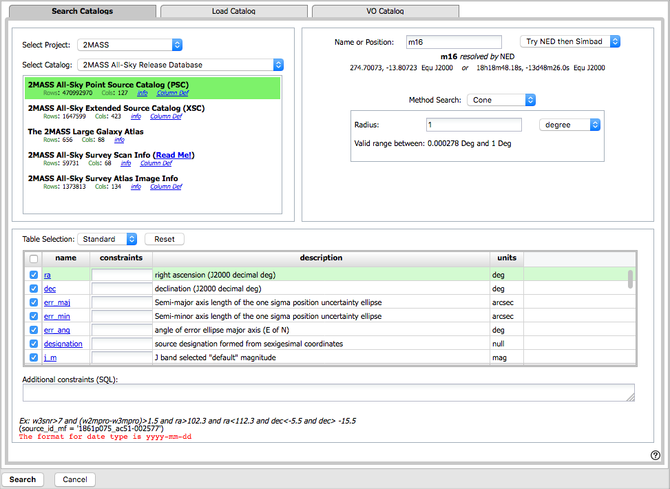
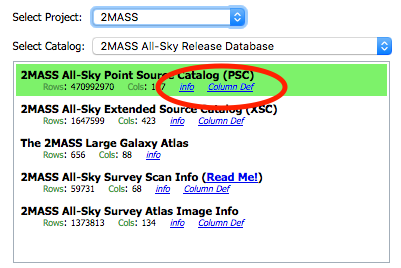
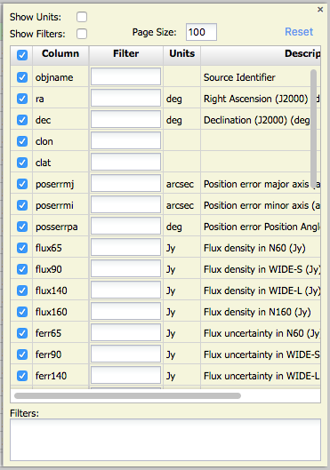
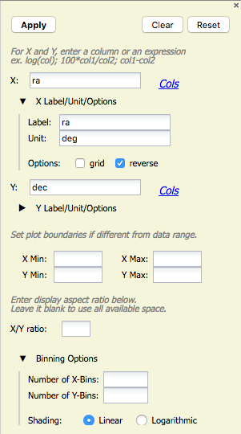
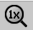
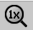

Contents:
+Catalogs from IRSA -- Overlaying catalogs
from IRSA
+Catalogs from disk -- Overlaying your own
catalogs
+Catalogs from VO -- Overlaying
catalogs obtained via the VO
+Columns and Filters with Catalogs
+Columns and filters -- Interacting with
catalogs
+Plotting catalogs
+Examples of catalog plots

The upper left of this window is where you specify which catalog you
want to search. To change catalogs, first select the "project" under
which they are housed at IRSA, such as 2MASS, IRAS, WISE, MSX, etc.
The available choices under the "category" and the specific clickable
catalog change according to the project you have selected. A short
description is provided for each of the catalogs, with links for more
information (including definitions of the sometimes cryptic column
names); an example is here:

The upper right of this window is where you specify the target (the position is pre-filled with its best guess as to what you want) and the search method (cone, elliptical, box, polygon, multi-object, all-sky), and the parameters that go with that search method (e.g., the radius of the cone).
Caution: pick your units from the pulldown first, and then enter a number; if you enter a number and then select from the pulldown, it will convert your number from the old units to the new units. There are both upper and lower limits to your search radius; it will tell you if you request something too big or too small. Note that these limits are survey-dependent.
The bottom of this window allows you to set restrictions on specific columns. It gives you a list of all the available column names in the corresponding catalog. (Most catalogs have identical "standard" and "long form" but some have more columns available in "long form".) From here, you can choose what to display (tickboxes on the left), and filter what is returned ("constraints" column). For example, only return objects with values in column y that are greater than x. If you add more than one restriction, they are combined logically using an "AND" operators; be careful, because you can thus restrict data such that none of the catalog meets your criteria.
Click on "Search" to initiate the search. It will load the catalog into a tab of its own. The objects will also be overlaid on any images you have loaded, and a default x-y plot will be shown. (For more on the x-y plots, see below.) All of these representations are interlinked -- clicking on a row in the table shows it on the image and in the plot, and clicking on an object in the image shows it in the table and in the plot, and clicking on an object in the plot shows it in the table and on the image.
To close the catalog search window without searching for a catalog, click on "Cancel".
NOTE THAT the search may take a long time to return, especially if you have asked for a large catalog, and you may think that nothing has happened, but be patient and eventually it will return a tab.
Use large search radii with caution! Be sure you understand how many sources you are likely to retrieve. Searches that retrieve more rows will take longer. Searches that retrieve millions of rows will take quite a while.
By clicking on the blue "Catalogs" tab, you are by default dropped into the interface for searching for catalogs at IRSA. However, you can pick another tab from the top center, "Load Catalog", to load your own catalog.
Your catalog needs to be in IPAC table format, which is a varietal of plain text. IRSA has a table reformatting and validation service which may be helpful, or you can download just about any catalog you find through IRSA, and mimic that format.
Your table file MUST have RA and Dec values, and unless it is specified, it assumes J2000.
You can add a "SYMBOL" parameter to change the shape (X, SQUARE, CROSS, EMP_CROSS, DIAMOND, DOT) of catalog marks, e.g.:
\SYMBOL = X
You can add a "DEFAULT_COLOR" parameter to assign a CSS color name or a HEX value to catalog marks, e.g., either of these two:
\DEFAULT_COLOR = lightcyan \DEFAULT_COLOR = #00FF00You can find the CSS color code or the CSS color HEX values online.
By clicking on the blue "Catalogs" tab, you are by default dropped into the interface for searching for catalogs at IRSA. However, you can pick another tab from the center right, "VO Catalog", to search for and load catalogs from the VO.
As for the IRSA catalog search, the tool pre-fills the target position with the coordinates of the target with which you have been working. In this case, you are limited to a cone search, so the next option is the cone search radius. As usual, pick your units from the pulldown first, and then enter a number; if you enter a number and then select from the pulldown, it will convert your number from the old units to the new units. There are both upper and lower limits to your search radius; it will tell you if you request something too big or too small.
Now, you need to put in the URL of the VO-compliant search that you want to use. If you know your VO URL already, type or paste your URL into the box and hit search.
More commonly, however, users do not know a priori which URL to use. Click on the "Find Astronomical Data Resources" link, which will open another browser tab or window with a searchable NAVO registry. Search on your desired keywords. Sift through the results to find what you want. Click on "Full Record" to view the full record of that resource in the registry. Look for "simple cone search" (near the bottom of the record), and copy the URL listed under "Available endpoints for the standard interface". Paste that into the IRSA Viewer cone search URL box. Click on "Search" to initiate the search.
The search results are then shown (and interacted with) in the same way as the other catalogs described here.
Troubleshooting: Note that searching the VO means that you are using resources not specifically housed at IRSA, so servers may be down, or timeouts set, or limits on numbers of returned sources, etc., that are beyond our control. In most cases the solution is to specify as precise a search as possible. The URL you enter into the box in FinderChart, though, must be a Cone Search base URL (not containing RA and Dec parameters, which are inserted into the URL by FinderChart in response to the search parameters you give it).
Example: Search on IC1396 and get a WISE image.
Search in the NAVO registry for "IPHAS". Obtain the "IPHAS DR2 Source
Catalog. Go down to "Simple cone search" and expand it by clicking on
the [+] on the left. Obtain this URL, which is found under "Available
endpoints for the standard interface":
http://vizier.u-strasbg.fr/viz-bin/votable/-A?-out.all&-source=II%2F321%2Fiphas2&
Copy this into the IRSA Viewer VO search URL. Click search. Obtain
rows from the IPHAS catalog in the IRSA Viewer interface.
To see more of the columns (and see more of the options described
shortly below), grab the divider(s) between the window panes and slide
it to widen the catalog pane until you can see the icon that looks
like this:  .
.
The table is shown exactly as it appears in the database (or as it appeared on your disk), with all columns as defined for that catalog. To understand what each column is, please see the documentation associated with that catalog (available via the catalog searching popup window shown above, or by navigating through the IRSA website.)
The tab (and table) name itself is the name of the catalog file as stored on the system at IRSA; it may be a little cryptic, but the first few words should make it clear whether it is WISE, 2MASS, etc. To remove the tab, click on the blue "X".
Immediately below the tab name(s), there are several symbols:

which we now describe.
The first thing to notice is that only the first 100 rows of the retrieved catalog are displayed in the table. In the example, there are 589 sources that were retrieved as part of the search. The black arrows plus the page number allow you to navigate among these 'pages' of 100 sources each. Note that the entire set of results (not just the 100 rows you are currently viewing) can be sorted alphabetically (or numerically for number fields) by clicking on any column's name. (Note also that in the plotting and overlay features described below, all the sources in the catalog are plotted on the images you have, not just the 100 shown in the first page.)
Going from left to right along the top of the catalog tab, the next
icon represents a filter:  Filters are a
very powerful way of exploring the catalog data. Click on
this icon in order to start the process of adding filters. A text
entry box appears above each of the current catalog columns, with a
small version of the filter icon corresponding to that row on the far
left. You can type operators and values in these boxes -- hit return
after typing or click in another box to implement the filter. For
fields with a limited set of choices, instead of a text entry box, a
filter icon will appear; click on it to select from the available
choices. As an example, to show only those sources with declination
above a certain value (say, 31 degrees), type "> 31" in the box
above the "dec" column. Or, if you have retrieved a WISE catalog and
would like to only view the objects with a W1 (3.4 micron)
profile-fitted magnitude less than 6 magnitudes, above the 'w1mpro'
column, type "< 6" in the form.
Filters are a
very powerful way of exploring the catalog data. Click on
this icon in order to start the process of adding filters. A text
entry box appears above each of the current catalog columns, with a
small version of the filter icon corresponding to that row on the far
left. You can type operators and values in these boxes -- hit return
after typing or click in another box to implement the filter. For
fields with a limited set of choices, instead of a text entry box, a
filter icon will appear; click on it to select from the available
choices. As an example, to show only those sources with declination
above a certain value (say, 31 degrees), type "> 31" in the box
above the "dec" column. Or, if you have retrieved a WISE catalog and
would like to only view the objects with a W1 (3.4 micron)
profile-fitted magnitude less than 6 magnitudes, above the 'w1mpro'
column, type "< 6" in the form.
After you impose a filter, then the number of rows in the catalog is
restricted according to the rules you have specified, and the
"filters" icon on the top right of the catalog pane has changed to
remind you that there has been a filter applied, in this case just one
filter:  . To clear the filters, click on
the cancel filters icon (which also appears after you impose filters):
. To clear the filters, click on
the cancel filters icon (which also appears after you impose filters):
 .
.
Note that the filters are logically "AND"ed together -- it will impose
this AND that AND this other restriction. You can relatively easily
restrict things such that no data are left; if that is the case, you
will get "There are no data to display." You can then cancel all the
filters at once via the cancel filters icon (), or remove them individually by hand by
editing the filter boxes at the top of each column, just as you did to
impose the filters.
The available logical operators are :
 -- clicking on this
changes the table display into a text display. The icon then changes
to
-- clicking on this
changes the table display into a text display. The icon then changes
to  -- click this again to return to the
default table view.
-- click this again to return to the
default table view.
The next icon is  which is "Save" -- this
is how you may save the catalog to your own local disk. It will save
it as an IPAC table file, which is basically ASCII text
with headers explaining the type of data in each column, separated by
vertical bars. By default, the file is called "GatorQuery.tbl"
because, under the hood, the software is talking to the IRSA Catalog Search Tool, powered by Gator.
Note that it will save your whole catalog if you save
without filtering. If you filter, the header of the file will still
say that all the rows are included, but only the filtered-down rows
are saved.
which is "Save" -- this
is how you may save the catalog to your own local disk. It will save
it as an IPAC table file, which is basically ASCII text
with headers explaining the type of data in each column, separated by
vertical bars. By default, the file is called "GatorQuery.tbl"
because, under the hood, the software is talking to the IRSA Catalog Search Tool, powered by Gator.
Note that it will save your whole catalog if you save
without filtering. If you filter, the header of the file will still
say that all the rows are included, but only the filtered-down rows
are saved.
The next to last option on the top of the catalog tab is this: . Clicking on this icon brings up options
for the table:

From here, you can change:
This is the last option on the top of the catalog tab:  . Clicking on this expands the catalog
window pane to take up the entire browser window. To return to the
prior view, click on "Close" in the upper left.
. Clicking on this expands the catalog
window pane to take up the entire browser window. To return to the
prior view, click on "Close" in the upper left.
You can also interactively impose filters from plots you make from the catalog - see the next section for discussion.
Power user tip: If you impose filters from the plot (see next section), it manifests as four filters on the catalog, one for each side of the square you have drawn on the plot. If you want to remove, say, just one of the four filters (rather than all of them by cancelling all filters), you can do so from the table options pop-up.
To obtain a full-screen view of your plot, click on the expand icon in
the upper right of the window pane when your mouse is in the window:
. To return to the prior view, click
the "Close" arrow in the upper left.
The plotting tool, by default, starts with RA and Dec plotted. Note that now (as of 10/2016) it does so following astronomical convention -- RA increases to the left.
Plot format: a first look
If you have loaded a catalog with many points, you may have an RA/Dec
plot that looks like the one on the left here. If you have loded a
catalog with few points, you will have an RA/Dec plot that looks like
the one on the right here.


The difference between them is that, for large catalogs (left), the plot is binned -- more points are encompassed in a black tile and fewer points are encompassed in a white tile. For small catalogs (right), each individual point is shown as a blue dot.
In either case, letting your mouse hover over a point tells you the
values of the point under your cursor, and (if binned) how many points
are represented:

Changing what is plotted
To change what is plotted, click on the gears icon in the upper right
of the plot window pane:  . Configuration options then appear:
. Configuration options then appear:

Here, you can specify what should be plotted on each axis. The "Cols"
link will bring up a table that lists all of the available columns in
the catalog. Alternatively, you can just start typing, and viable
options appear below the box. Whatever you put in the box must match
the column name as shown in the catalog exactly. It
In this example, RA is plotted. It has pulled the column name for the label; in this table, the column is "ra" rather than "RA". It has copied over the units ("deg") from the catalog. You can change what column is plotted, as well as what label and units are shown in the plot. Next, you can choose whether or not a grid is included on that axis, and whether or not the axis is reversed -- in this case, because it's plotting RA, the axis is reversed. Next in the pop-up are the identical options for the y-axis. Click on the triangle to open these options for the y-axis.
By default, the boundaries of the plot are set to encompass the full data range. Here you can change the boundaries to specific numbers. (This can also be set via filtering from the plot; see below.)
If you want a square or rectangular plot, you can change the x/y ratio as displayed.
Finally, you can control how the plot is binning up points for the greyscale plots. You can control how many bins are used, and how the grey shading is calculated (linearly or logarithmically).
Click "Apply" to apply, "Clear" to clear all fields, and "Reset" to set it back to default values.
Example: Load a WISE catalog. Plot w1snr vs. w1mpro. Change the labels by clicking on the triangles below each entry box, and make the label "SNR in WISE-1" rather than the more cryptic column header "w1snr".
Plotting manipulated columns
You can choose a single column to plot against another column, as above. However, you can also do simple mathematical manipulations.
For example, if you have loaded a WISE catalog, you can plot [W1] vs.
[W1]-[W4]. In terms of the names of the columns in the database, this
is w1mpro vs. w1mpro-w4mpro.

Restricting what is plotted
You can also restrict what data are plotted in any of several different ways.
You can set limits from the plot options pop-up (discussed above).
However, and perhaps more powerfully, you can set limits from the plot
itself using a rubber band zoom. Click and drag in a sub-region of
the plot. The icons in the upper left of the plot change
corresponding to what you can do, in this case to these:  . They are, from left to right: zoom in on
the region you have selected, select the objects in the catalog, and
filter the catalog to leave only those objects. If you click on the
zoom icon, then the plot axes change to encompass just the sources you
have selected. (Click on the 1x icon  to
return to the original view.)
If you click on the select icon, then the plot symbols
corresponding to your selection change shape and color, the rows
(corresponding to those sources) in the catalog are highlighted in the
catalog window pane, and the corresponding objects overplotted on the
image in the image window pane change color. If you click on the
filter icon, then the catalog view is filtered down, restricted to
just those sources you have selected, and the filter notes in the
upper left of the plot window (and the upper right of the catalog
window) change to remind you that you have a filter applied. Only
those sources that pass the filter are shown overlaid on the image(s).
(This is the behavior of 'filter', as opposed to 'select'; the former
restricts what is shown, the latter just highlights the objects.) For
more on filters, see the filter section.
. They are, from left to right: zoom in on
the region you have selected, select the objects in the catalog, and
filter the catalog to leave only those objects. If you click on the
zoom icon, then the plot axes change to encompass just the sources you
have selected. (Click on the 1x icon  to
return to the original view.)
If you click on the select icon, then the plot symbols
corresponding to your selection change shape and color, the rows
(corresponding to those sources) in the catalog are highlighted in the
catalog window pane, and the corresponding objects overplotted on the
image in the image window pane change color. If you click on the
filter icon, then the catalog view is filtered down, restricted to
just those sources you have selected, and the filter notes in the
upper left of the plot window (and the upper right of the catalog
window) change to remind you that you have a filter applied. Only
those sources that pass the filter are shown overlaid on the image(s).
(This is the behavior of 'filter', as opposed to 'select'; the former
restricts what is shown, the latter just highlights the objects.) For
more on filters, see the filter section.
If you have a big catalog, zooming or filtering may mean that then individual points can be shown, rather than binned points.
If you move your mouse over any of the points, you will get a pop-up telling you the values corresponding to the point under your cursor. If you click on any of the points, the object(s) corresponding to that point will be highlighted in the overlays in the images shown, and highlighted in the catalog table. This works the other way too - click on a row in the catalog, or an object in the images, and the object will be highlighted in the plot or the catalog or the image.
Want to save a plot to file? At this time, the best way to do that is a screen snapshot. On a Mac, this is accomplished via holding down command, then shift, then 4, then let go and your mouse cursor changes. Hit the space bar to select the window over which your mouse is hovering. Your mouse cursor changes again, and hit the mouse button. A snapshot is then saved to your Desktop, tagged with the date and time.
In a star-forming region defined for this example, we are trying to find young stars. We will search in the WISE AllWISE catalog. Stars without circumstellar dust should be at a variety of W1 brightnesses, but all have [W1]-[W4]~0. Background galaxies should be faint and red. Stars with circumstellar dust (e.g., young stars) should be bright and red. Here, we will make a plot, identify a bright and red object in the plot, and find where it is in the WISE images.
) icon in the
upper right of the plot window to make it big.
icon in the
upper left of the plot window to change what is plotted.